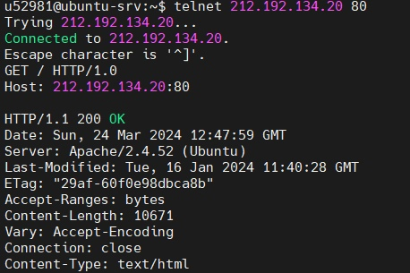
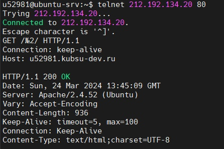
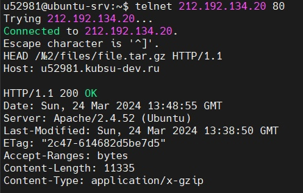
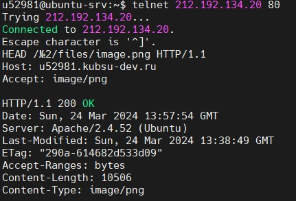
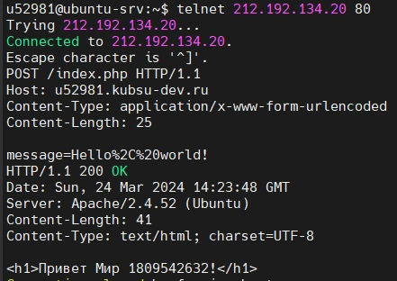

1. получить главную страницу методом GET в протоколе HTTP 1.0

2. получить внутреннюю страницу методом GET в протоколе HTTP 1.1

3. определить размер файла file.tar.gz, не скачивая его

4. определить медиатип ресурса /image.png

5. отправить комментарий на сервер по адресу /index.php
